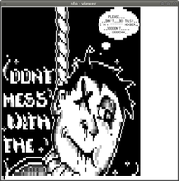

nfo Dateien
Dieser Artikel wurde für die folgenden Ubuntu-Versionen getestet:
Dieser Artikel ist größtenteils für alle Ubuntu-Versionen gültig.
Zum Verständnis dieses Artikels sind folgende Seiten hilfreich:
NFO ist eine Abkürzung für „Info“. Sie wird aufgrund der 8.3-Beschränkung vieler Dateisysteme als Drei-Buchstaben-Dateinamenerweiterung benutzt, zum Beispiel readme.nfo.
Dateien mit NFO-Dateierweiterung sind häufig generische ASCII-Textdateien, die z.B. mit einem einfachen Texteditor betrachtet werden können. Für gewöhnlich ist es damit möglich, den Großteil des Informationsgehaltes der NFO-Datei darzustellen. Da NFO-Dateien jedoch auch häufig mit ASCII-Art ausgeschmückt sind und die dafür verwendeten Grafik- und Steuerzeichen in einem Standard-Texteditor nicht korrekt dargestellt werden können, empfiehlt sich die Verwendung eines NFO-Dateibetrachters.
| NFO-Datei in normalem Texteditor |
|  |
| NFO-Datei per Skript nach UTF8 konvertiert |
Um unter Ubuntu/Linux *.nfo-Dateien richtig betrachten zu können, benötigt man entweder ein Codepage-437-fähiges Betrachtungsprogramm oder man kann sie von Codepage 437 nach UTF8 konvertieren. Das geht unter Linux ganz einfach mit dem Programm iconv, welches bereits in der Standardinstallation von Ubuntu enthalten ist, zum Beispiel so [1]:
iconv -f 437 -t UTF8 deine_nfo_datei.nfo | less
NFO Viewer¶
NFO Viewer  ist ein einfaches Werkzeug zum Betrachten von NFO-Dateien. Es kann über die offiziellen Paketquellen installiert werden [2]:
ist ein einfaches Werkzeug zum Betrachten von NFO-Dateien. Es kann über die offiziellen Paketquellen installiert werden [2]:
nfoview (universe)
 mit apturl
mit apturl
Paketliste zum Kopieren:
sudo apt-get install nfoview
sudo aptitude install nfoview
Konvertierungs-Shellskript¶
Will man, dass sich NFO-Dateien automatisch, richtig konvertiert, in einem Fenster öffnen, sobald man sie anklickt, kann man obigen Befehl in einem Skript aufrufen und als Standardanwendung zur Öffnung von *.nfo-Dateien machen.
Skript erstellen¶
Dafür erstellt man zuerst eine Datei [3] mit dem Namen shownfo.sh in einem Ordner eigener Wahl (/usr/local/bin bietet sich dafür an) und öffnet sie. Dort fügt man jetzt folgenden Code (übernommen aus dem Bembel-B Blog ) ein und speichert die Datei danach wieder:
1 2 3 4 5 6 7 8 9 10 11 | #!/bin/sh if [ -z "$@" ] then echo "No filename given." echo "Usage: `basename $0` filename(s) [filename(s)]..." else iconv -f 437 -t UTF8 "$@" | less fi exit 0 |
Jetzt muss man sie noch ausführbar [4] machen.
Skript als Standardanwendung zum Öffnen¶
Will man nun bewerkstelligen, dass sich NFO-Dateien automatisch mit dem Skript öffnen, muss man im Dateimanager per Kontextmenü  auf eine *.nfo-Datei klicken und "Öffnen mit -> Anderer Anwendung... -> Benutzerdefinierten Befehl verwenden" auswählen. Hier gibt man nun einen Befehl ein, um ein Terminalfenster zu öffnen, welches das oben erstellte Skript ausführt.
auf eine *.nfo-Datei klicken und "Öffnen mit -> Anderer Anwendung... -> Benutzerdefinierten Befehl verwenden" auswählen. Hier gibt man nun einen Befehl ein, um ein Terminalfenster zu öffnen, welches das oben erstellte Skript ausführt.
Beispiel für xterm:
xterm -bg black -fg white -geometry 100x45 -T 'nfo - viewer' -e /usr/local/bin/shownfo.sh
Beispiel für gnome-terminal:
gnome-terminal -t 'nfo - viewer' -x /usr/local/bin/shownfo.sh
Hinweis:
Um die Darstellung der NFO-Dateien im Terminal zu verändern, kann man noch weitere Parameter übergeben als in in den Beispielen oben. Sie sind vollständig in den jeweiligen Manpages der Terminals aufgelistet.
Schriftart Lucida ConsoleP¶
Eine weitere ziemlich simple Methode ist es, die Schriftart Lucida ConsoleP  im TrueType-Format herunterzuladen, im Homeverzeichnis den versteckten Ordner .fonts/ zu erstellen und dort die Datei luconP.tff hineinzukopieren.
im TrueType-Format herunterzuladen, im Homeverzeichnis den versteckten Ordner .fonts/ zu erstellen und dort die Datei luconP.tff hineinzukopieren.
Gedit¶
Jetzt kann man in Gedit unter "Bearbeiten -> Einstellungen -> Schriften und Farben -> Editor-Schrift" schließlich Lucida auswählen und auch so NFO-Dateien betrachten. Nachteil sind einmal die Balken zwischen den Zeilen, die das Bild durchlaufen und dass mit dieser Methode der Standard-Texteditor immer mit dieser Schriftart für NFOs betrieben wird, man müsste sie also bei jedem Betrachten manuell wieder umstellen.
- Erstellt mit Inyoka
-
 2004 – 2017 ubuntuusers.de • Einige Rechte vorbehalten
2004 – 2017 ubuntuusers.de • Einige Rechte vorbehalten
Lizenz • Kontakt • Datenschutz • Impressum • Serverstatus -
Serverhousing gespendet von